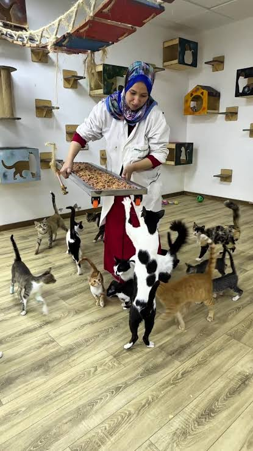

Visit the Shelter
Visit PAWS during its operating hours to meet the cats and dogs that are currently available for adoption.
Give an Animal a Second Chance
Open your heart and home to a rescued animal. Adoption gives cats and dogs the opportunity to experience safety, care and lifelong companionship.
About Adoption
PAWS provides shelter and care for rescued cats and dogs while they wait for responsible and loving families. Visitors can meet available animals and speak with shelter staff before completing the adoption process.
Step-by-Step Guide
Follow these steps when adopting an animal from PAWS.
Visit PAWS during its operating hours to meet the cats and dogs that are currently available for adoption.
Spend time with the animals and choose one that matches your home, lifestyle and ability to provide long-term care.
A shelter staff member will interview you to determine whether you are prepared to become a responsible adopter.
Complete the required payment, receive your official receipt and welcome your new family member home.
Minimum Contribution
Adoption contributions help PAWS provide shelter, food and medical care for rescued animals.
| Animal Type | Age | Minimum Donation |
|---|---|---|
| Adult Mongrel Dog | Above 1 year old | RM100 |
| Mongrel Puppy | Below 1 year old | RM130 |
| Adult Domestic Short-Hair Cat | Above 1 year old | RM80 |
| Domestic Short-Hair Kitten | Below 1 year old | RM100 |
| Mixed Breed Dog or Cat | Regardless of age | RM200 |
| Purebred Dog or Cat | Regardless of age | Starting from RM300 |
Donation amounts may change. Please check the official PAWS website for the latest information.
Animal Care
Animals adopted from PAWS may receive important medical care and basic support before going to their new homes.
Spay or neuter procedure
Relevant vaccinations
De-worming treatment
Microchip identification
Basic health assessment
Pet-care guidance
Medical records where available
Possible starter items, subject to availability
Services and starter items may vary according to the animal, its medical needs and current availability.
Please Read Carefully
Payment must be completed and adopters should obtain an official receipt.
PAWS does not accept payment to reserve animals. Adoption is generally based on a first-come, first-served process.
Every adopter must complete the interview and adoption process before bringing an animal home.
Adopters must be ready to provide food, shelter, veterinary care, time and affection throughout the animal’s life.
Available Animals
Browse the latest cats and dogs available for adoption through the official PAWS adoption platform.

Official External Gallery
View updated animal profiles, photos and adoption information on PAWS’ official adoption platform.
Browse Adoption Gallery You will be redirected to an official external platform.Other Ways to Help
You can still help PAWS through donations, volunteering, sponsorship and public awareness.
Learn How to Help